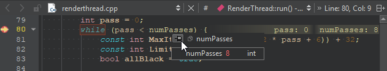
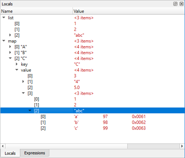

Examining Data
When the application stops, you can examine certain data in the debugger. The availability of data depends on the compiler settings when compiling the application and the exact location where the application stops.
Unexpected events are called exceptions and the debugger can stop the application when they occur. Going to the location in the code where the exception occurred helps you investigate the problem and find ways to fix it.
If you have a variable that shows text, but the application does not display it correctly, for example, your data might be incorrect or the code that sets the display text might do something wrong. You can step through the code and examine changes to the variable to find out where the error occurs.
The following video shows how to examine variable values:
Showing Tooltips for Simple Values
To display the value of a simple variable, hover the mouse pointer over its name in the code editor.

To keep the tooltip visible, click the pin button. You can expand pinned tooltips to view their full content.
Pinned tooltips are stored in the session. To close all pinned tooltips, select Close Editor Tooltips in the context menu in the Locals or Expressions view.
To disable tooltips for performance reasons, select Preferences > Debugger > General > Use tooltips in main editor when debugging.
Examining Complex Values in Debug Views
Qt Creator displays the raw information from the native debuggers in a clear and concise manner to simplify the debugging process without losing the power of the native debuggers.

The Locals and Expressions views show structured data, such as objects of class, struct, or union types, as a tree. To access sub-structures of the objects, expand the tree nodes. The tree shows the sub-structures in their in-memory order. To show them in alphabetic order, select Sort Members of Classes and Structs Alphabetically in the context menu.
Similarly, pointers are displayed as a tree item with a single child item representing the target of the pointer. Select Dereference Pointers Automatically in the context menu to combine the pointer and the target into a single entry that shows the name and the type of the pointer and the value of the target.
The standard representation is good enough for the examination of simple structures, but it does usually not give enough insight into more complex structures, such as QObjects or associative containers. These items are internally represented by a complex arrangement of pointers, often highly optimized, with part of the data not directly accessible through neither sub-structures nor pointers.
To show complex structures, such as QObjects or associative containers, in a clear and concise manner, Qt Creator uses Python scripts that are called debugging helpers.
In addition to the generic IDE functionality of the Stack, Locals, Expressions, Registers, and other views, Qt Creator makes debugging Qt-based applications easy. The debugger plugin understands the internal layout of several Qt classes, for example, QString, the Qt containers, and most importantly QObject (and classes derived from it), as well as most containers of the C++ Standard Library and some GCC extensions. It uses this deeper understanding to present objects of such classes in a useful way.
To change the number of array elements that are requested when expanding entries, select Preferences > Debugger > Locals & Expressions > Default array size.
Stepping Through Code
The following table summarizes the functions that you can use to step through the code and examine the changes in variables.
| Button | Function | Keyboard Shortcut | Description |
|---|---|---|---|
 | Stop Debugger | Shift+F5 | Stops the debugger. |
 | Step Over | F10 (Command+Shift+O on macOS) | Steps over the next line inside the function being debugged. It executes the call and moves to the next line to be executed in the function. |
 | Step Into | F11 (Command+Shift+I on macOS) | Steps into the line that it is currently on. For a function call, goes into the function and is ready to continue. |
 | Step Out | Shift+F11 (Command+Shift+T on macOS) | Finishes executing the function and exits to the function that it was called from. |
| Run to Line | Ctrl+F10 (Shift+F8 on macOS) | Runs to the line that has the cursor. You can also directly jump to a line instead of executing until the end of the line, to avoid a variable getting modified or a function getting called, for example. | |
| Run to Selected Function | Ctrl+F6 | Runs to the selected function when you are stepping into a nested function. | |
 | Continue | F5 | Resumes application execution at the address where it last stopped. |
Compressing Steps in GDB
When using GDB as the debugging backend, you can compress several steps into one step for less noisy debugging. For more information, see Specifying GDB Settings.
The extended GDB settings have the option to step backwards in code, but this option should be used with care, as it is slow and unstable on the GDB side. For more information, see Specifying GDB Settings.
Stepping into Frameworks in macOS
In macOS, external libraries are usually built into so-called Frameworks, which may have both release and debug versions of the library. When you run applications on the macOS desktop, the release version of Frameworks is used by default. To step into Frameworks, select the Use debug versions of Frameworks option in the project run settings.
Inspecting Basic Qt Objects
The most powerful feature of the debugger is that the Locals and Expressions views show the data that belongs to Qt's basic objects. For example, in case of QObject, instead of a pointer to some private data structure, you see a list of children, signals, and slots.
Similarly, instead of displaying many pointers and integers, Qt Creator's debugger displays the contents of a QHash or QMap in an orderly manner. Also, the debugger shows access data for QFileInfo and the real contents of QVariant.
Changing Value Display format
In the Locals or the Expressions view, select Change Value Display Format in the context menu to change the value display format. The available options depend on the type of the current items, and are provided by the debugging helpers.
To force a plain C-like display of structures, select Preferences > Debugger > Locals & Expressions, and then deselect the Use Debugging Helpers check box. This still uses the Python scripts, but generates more basic output. To force the plain display for a single object or for all objects of a given type, select Change Value Display Format > Raw in the context menu of the Locals or Expressions view.
Typically, you can change the encoding for string-like data, such as QByteArray and std::string, or show the data in a full editor window.
You can select a compact option for map-like data, such as QMap, QHash, and std::map, that uses the Name column for keys and results in a concise display of containers with short keys, such as numbers or short strings. For example, to expand all the values of QMap, select Change Value Display Format > Compact.
For strings, you can select Change Value Display Format > Separate Window to see string content inside a text edit instead of a single line item in the view. For QPixmap, you can see the pixmap being created pixel-by-pixel when stepping through the code.
Changing Variable Values
You can use the Locals and Expressions view to change the contents of variables of simple data types, for example, int, float, QString and std::string when the application is interrupted. To do so, click the Value column, modify the value with the inplace editor, and press Enter.
To change the complete contents of QVector or std::vector values, type all values separated by commas into the Value column of the main entry. However, Qt Creator does not try to reallocate memory for variables, so it applies the changes only if the new content fits into the old memory and if the debugger supports changing values.
Signal-Slot Connections
If an instance of a class is derived from QObject, you can find all other objects connected to this object's slots with Qt's signals and slots mechanism. Select Preferences > Debugger > Locals & Expressions > Use Debugging Helpers.

In the Locals view, expand the object's entry and open the slot in the slots subitem. The view shows the objects connected to this slot as children of the slot. Similarly, you can show the children of signals.
Low-level Data
If you cannot debug Qt objects because their data is corrupted, you can switch off the debugging helpers to make low-level structures visible.
To switch off the debugging helpers, deselect Use Debugging Helpers in Preferences > Debugger > Locals & Expressions.